TEMA 5
GRUNDLÆGGENDE INDHOLD
I dette tema fik vi en introduktion til indholdsproduktion og de forskellige faser i processen: planlægning (præproduktion), produktion og efterbehandling (postproduktion). Vi arbejdede desuden med animeret vektorgrafik ved hjælp af LottieFiles og lærte centrale faglige begreber inden for digital indholdsproduktion.
Temaet byggede videre på de kompetencer, vi havde opnået i de tidligere temaer, og vi anvendte dem i praksis gennem et sandkassesite og et redesign af en virksomheds hjemmeside.
Opgave 1: Sandkassesite
Vi indledte temaet med en opvarmningsopgave, hvor vi udforskede indholdsproduktion, designassociationer og arbejdet med at finde og formidle et centralt budskab. Med frie rammer valgte vi selv et emne og udviklede det videre gennem vores egne idéer og visuelle greb.
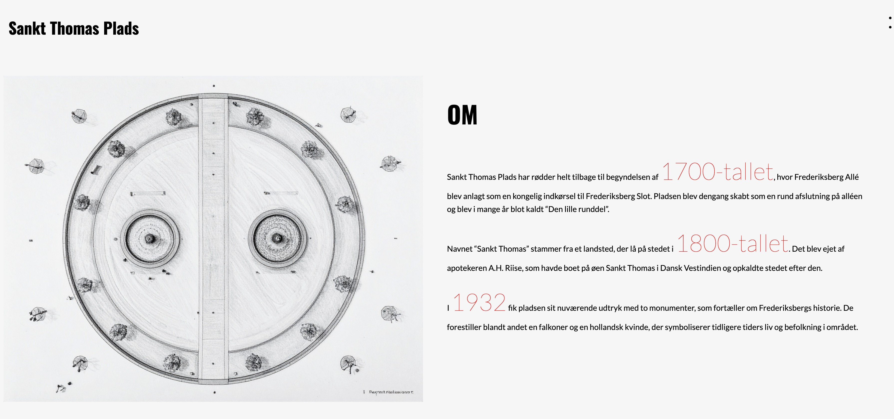
Screenshot af færdige løsning/kodet hjemmeside
Emne
Projektet tager udgangspunkt i Sankt Thomas Plads og har fokus på at formidle pladsens visuelle udtryk, funktion og stemning gennem en hjemmeside.
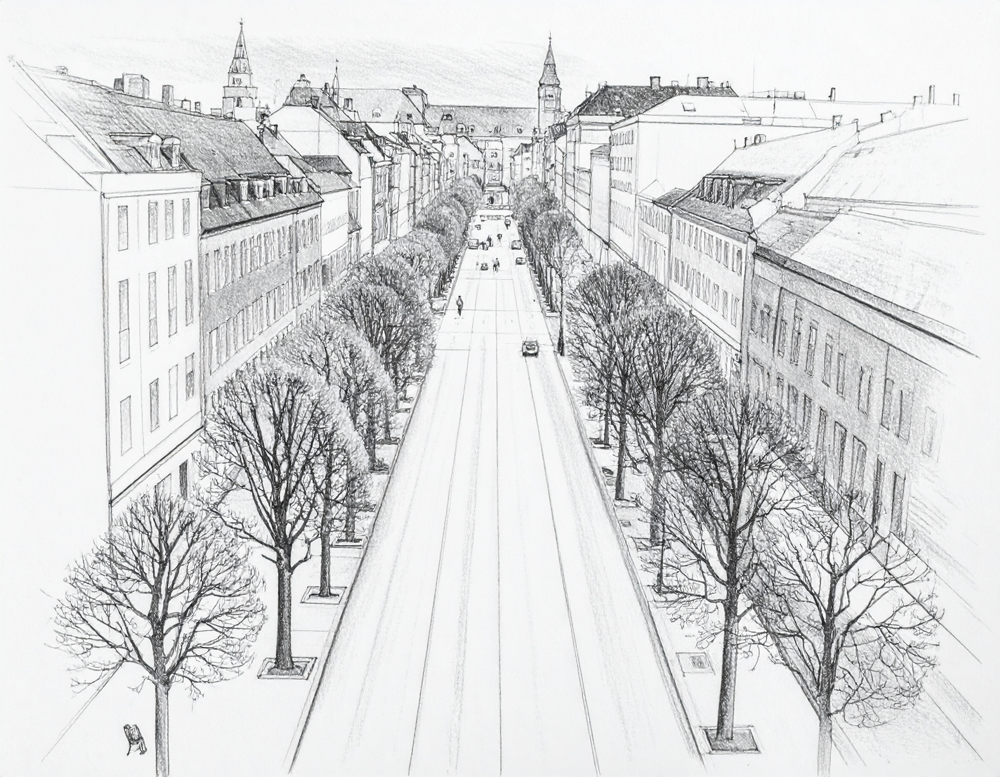
AI-genereret billede af Frederiksberg Allé
Designassociationer
Ro – pladsen opleves som et stille åndehul midt i byen
Historie – stedets baggrund og udvikling over tid
Hverdagsliv – hvordan mennesker bruger pladsen i dag
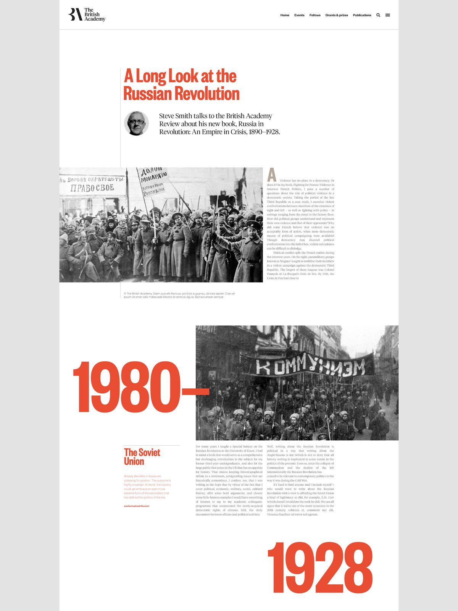
Billede fundet på Pinterest til ispiration (@Craig Moran)
Centrale budskab
Sankt Thomas Plads er et lille, men betydningsfuldt byrum, hvor historie og nutid mødes, og hvor man kan opleve en pause fra byens tempo.
Brugerrejse
Brugeren møder først et visuelt stærkt overblik (hero-sektion), som introducerer pladsen og skaber interesse. Herefter guides brugeren videre gennem en række billeder og korte tekstbidder, der præsenterer både stemning, funktion og baggrund. Undervejs veksles der mellem visuelle indtryk og korte informationer, så oplevelsen forbliver let og engagerende. Rejsen afsluttes med et samlet indtryk af pladsens identitet og atmosfære.
Indholdsproduktion
Hjemmesiden vil indeholde både AI-genereret visuelt materiale, herunder et overbliksbillede af pladsen set oppefra, samt egne fotografier taget på lokationen. De egne billeder redigeres i Adobe Photoshop for at skabe et ensartet og visuelt gennemarbejdet udtryk. Teksterne holdes korte og målrettede, så de understøtter det visuelle indhold.
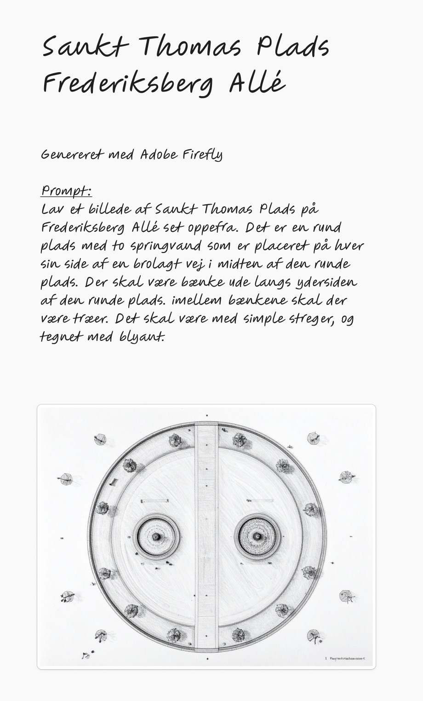
Billede fra processen af indholdsproduktion
Færdige løsning
På grund af sygdom under forløbet nåede jeg ikke helt i mål med at videreudvikle den visuelle identitet, og derfor oplever jeg, at det centrale budskab kunne have været kommunikeret tydeligere gennem designet.
Endelige aflevering
Selvom jeg ikke nåede at færdigudvikle alle aspekter af den visuelle identitet, giver den afleverede løsning et indblik i projektets koncept og retning. Herunder findes et link til den endelige aflevering.
Se projektOpgave 2: Virksomhedssite
Som en del af temaet arbejdede vi i grupper med at redesigne en selvvalgt virksomheds hjemmeside. Projektet omfattede både udvikling af design, produktion af eget indhold og kodning af det færdige website.
Formålet var at samle og anvende de færdigheder, vi havde opnået gennem uddannelsens tidligere temaer, i et større og mere virkelighedsnært projekt.
Projektet gav samtidig et første indblik i samarbejdet med en reel virksomhed og de arbejdsprocesser, der kendetegner branchen. Det gjorde opgaven særligt relevant, da den gav erfaring med et casearbejde, der ligger tæt op ad de opgaver, man kan møde som multimediedesigner.
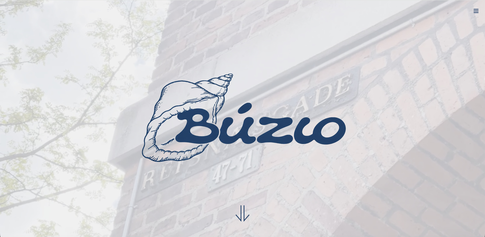
Screenshot af redesign
Virksomhed
Vi gik med en Portugisisk vinbar ved navn Búzio.
Baggrund for redesignet
Da vi arbejdede i en gruppe på fire, havde vi mulighed for at fordele opgaverne og samtidig afsætte mere tid til research, analyse og test end i tidligere projekter. Det gav os mulighed for at fordybe os i de metoder og værktøjer, vi havde arbejdet med gennem semesteret.
På baggrund af vores faglige viden og test af den eksisterende hjemmeside identificerede vi en række udfordringer og forbedringsmuligheder. Disse indsigter dannede grundlag for et redesign med fokus på at styrke brugervenligheden og skabe et mere sammenhængende udtryk.
Samtidig arbejdede vi med at optimere indholdet, så det i højere grad afspejler stedets identitet, stemning og tilbud, og dermed giver brugeren et mere fyldestgørende indblik i oplevelsen.
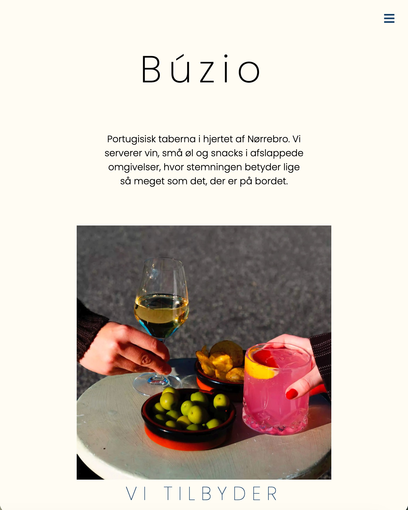
Screenshot af redesign
Opgave 2: Proces
Baggrund for forbedringer
Heuristisk evaluering
Den heuristiske evaluering viste flere udfordringer i den eksisterende hjemmeside. Det var uklart, hvilke elementer der var klikbare, og manglende tydelig navigation gjorde det svært at finde centrale funktioner som menu og booking. Derudover påvirkede lav kontrast mellem tekst og baggrund læsbarheden negativt, og information var til tider uoverskueligt struktureret. Selvom designet fremstod æstetisk og minimalistisk, gik det i nogle tilfælde ud over funktionaliteten.
Sammenfatning af brugertests
Vi gennemførte desuden en Likert-test, en 5-sekunders test samt en tænke-højt-test på den eksisterende hjemmeside.
Resultaterne fra testene understøttede i høj grad den heuristiske evaluering. På tværs af testene gik de samme problematikker igen, særligt uklar navigation, lav læsbarhed og manglende tydelighed i klikbare elementer. Samtidig blev det æstetiske og minimalistiske udtryk også bekræftet, men med en erkendelse af, at det til tider gik ud over brugervenligheden.
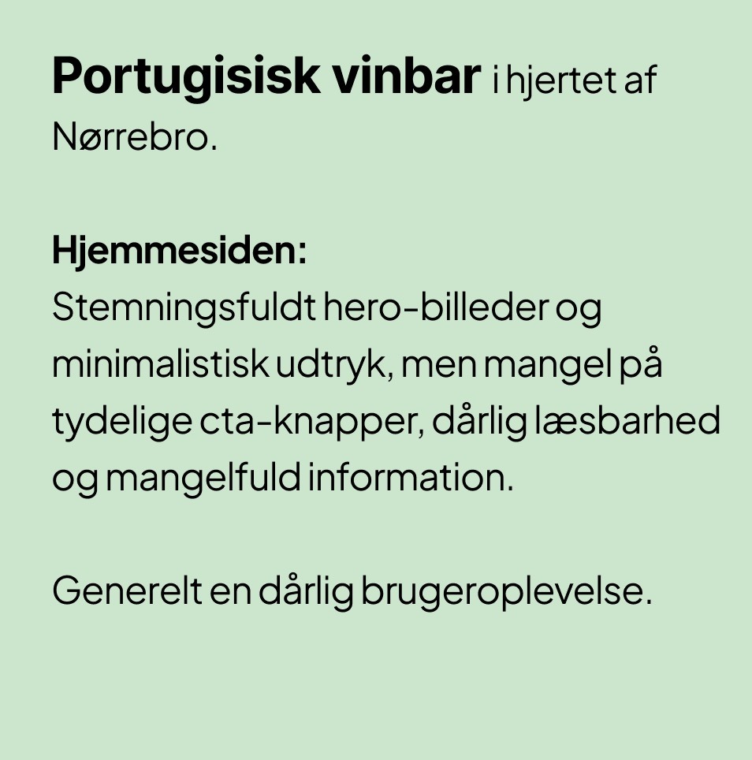
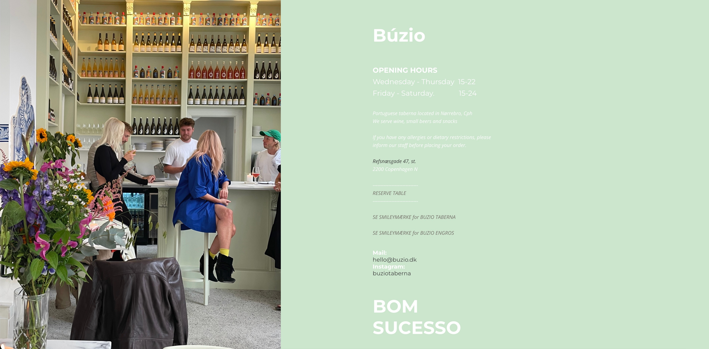
Screenshot af virksomheds oprindelige hjemmeside
Målgruppe
På baggrund af vores analyser fandt vi frem til en målgruppe:
Madinteresserede københavnere og turister mellem 25–45 år med middel til høj købekraft, som søger autentiske og sociale restaurantoplevelser.
Userstories
Derigennem kunne vi så udforme nogle userstories, som vi kunne bruge til skabe en god brugeroplevelse.
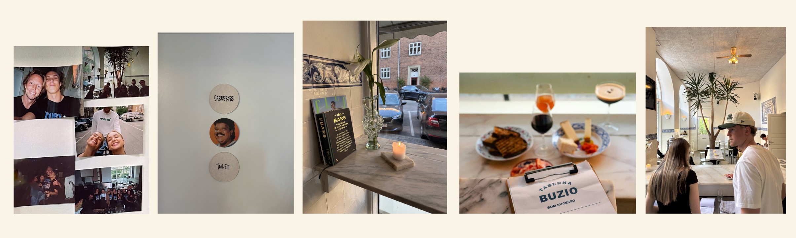
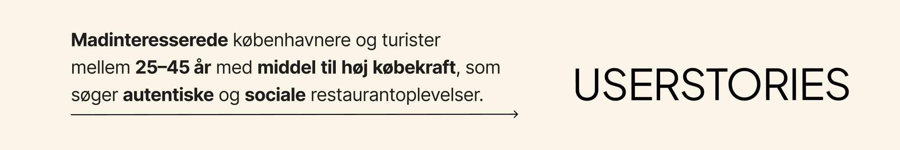
Moodboards og styletiles
Vi udviklede to styletiles samt et moodboard til udformningen af et logo, som tilsammen dannede grundlag for den visuelle retning i projektet.
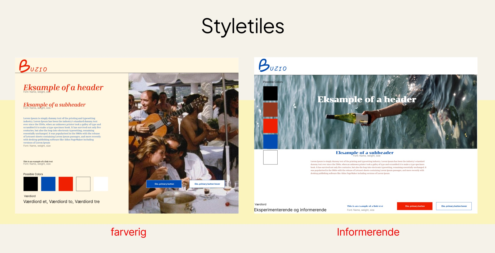
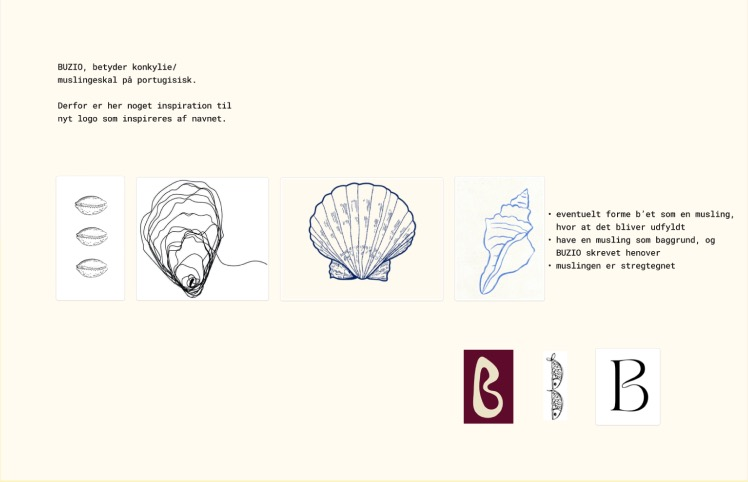
Lightning Demo og eksperimentering
På baggrund af lightning demos identificerede vi funktioner og visuelle løsninger, som vi ønskede at tage med videre i vores redesign.
Derudover arbejdede vi med Crazy 8’s og solution sketches for at udforske idéer hurtigt og visuelt på papir.
Dette hjalp os med at komme ud af hovedet og ned på konkrete skitser, hvilket gjorde det lettere at afklare, hvilken retning og struktur vi ville arbejde videre med i redesignprocessen.
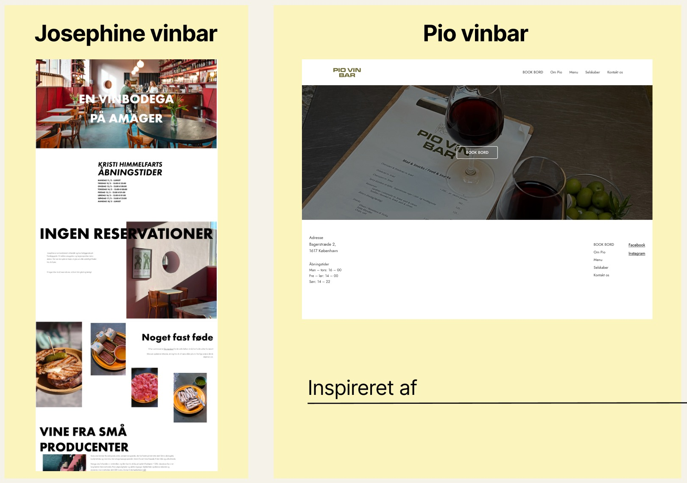
Defineret forkus på redesign
På baggrund af analysen af den eksisterende hjemmeside valgte vi at fokusere på at skabe et mere moderne, professionelt og brugervenligt redesign, samtidig med at den hyggelige og autentiske stemning besvares. Den nuværende hjemmeside havde et flot minimalistisk udtryk og gode atmosfærebilleder, men flere centrale funktioner var uklare eller svære at finde.
i redesignet vil vi derfor arbejde med tydeligere navigation og CTA-knapper som “book bord” og “menu/vi tilbyder”, så brugeren hurtigere kan finde de vigtigste funktioner.
Derudover vil vi forbedre læsbarheden gennem bedre kontrast og et mere struktureret layout. Vi ønsker også at styrke brandidentiteten ved at tilføje beskrivelser af stedet, billeder af maden, lokale og gæsters oplevelser samt information om arrangementer.
Målet er at skabe en hjemmeside, der både formidler stemningen på restauranten og giver brugeren en mere intuitiv og informativ oplevelse
Opgave 2: Redesign
Wireframes
På baggrund af research- og idéudviklingsfasen kunne vi hurtigt udvikle wireframes til redesignet, da de centrale designvalg og den overordnede struktur allerede var afklaret.
For mig understregede dette værdien af en grundig præproduktion, da et solidt forarbejde gør det lettere at træffe designbeslutninger senere i processen.
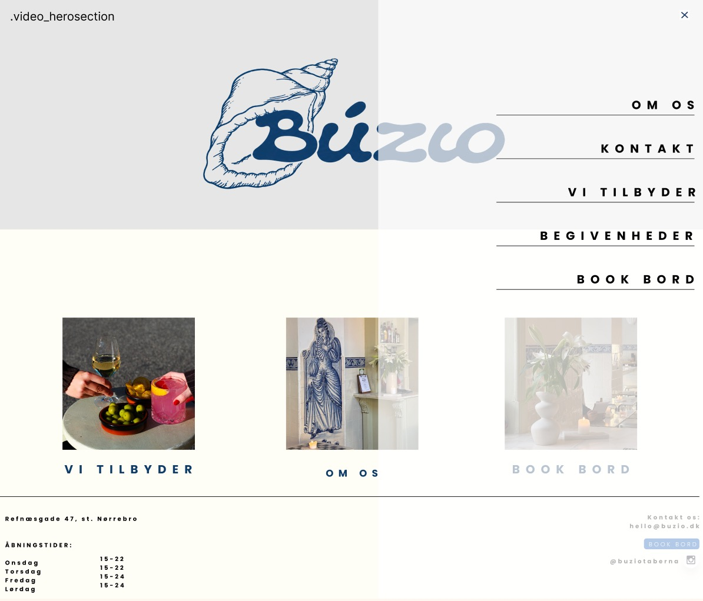
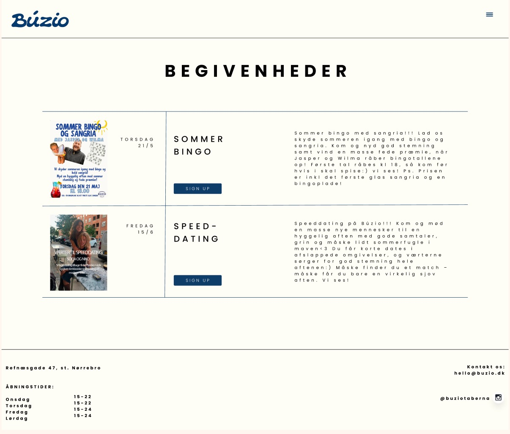
I idéudviklingsfasen udarbejdede vi en brugerrejse for at kortlægge, hvordan brugeren forventes at bevæge sig gennem hjemmesiden – fra første møde med forsiden til den ønskede handling, som eksempelvis booking af bord. Brugerrejsen dannede grundlag for vores wireframes, da den hjalp os med at prioritere indhold og strukturere siden ud fra brugerens behov.
På den måde sikrede vi, at vigtige informationer og funktioner blev placeret logisk i forhold til brugerens rejse gennem sitet.
Likert-test
Vi gennemførte også en Likert-test af vores redesign med de samme spørgsmål som i testen af den eksisterende hjemmeside. Formålet var at undersøge, om vi havde formået at optimere de områder, vi havde haft fokus på, og dermed vurdere, om vi havde nået vores mål.
Resultaterne viste, at dette var tilfældet. Ved at sammenligne besvarelserne kunne vi se, at deltagerne i Likert-testen af redesignet i høj grad var enige eller helt enige i udsagnene, hvilket indikerer en tydelig forbedring af brugeroplevelsen.
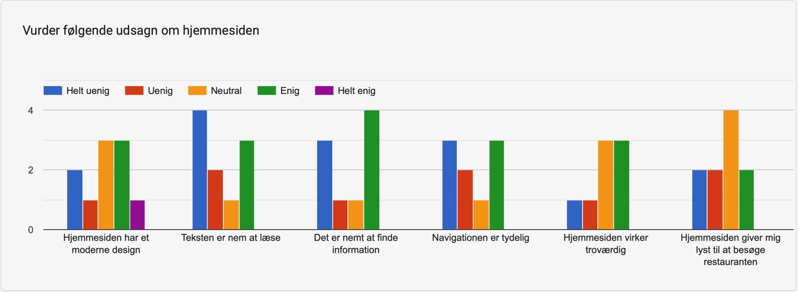
Likert-test af eksisterende hjemmeside
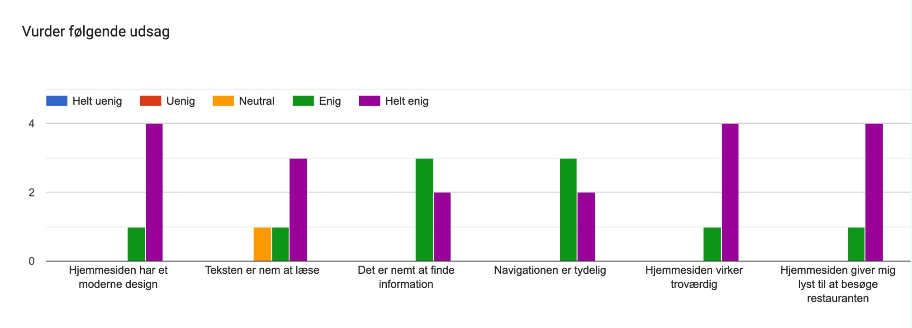
Likert-test af redesign
Redesign
Her ses lidt udklip fra vores redesign
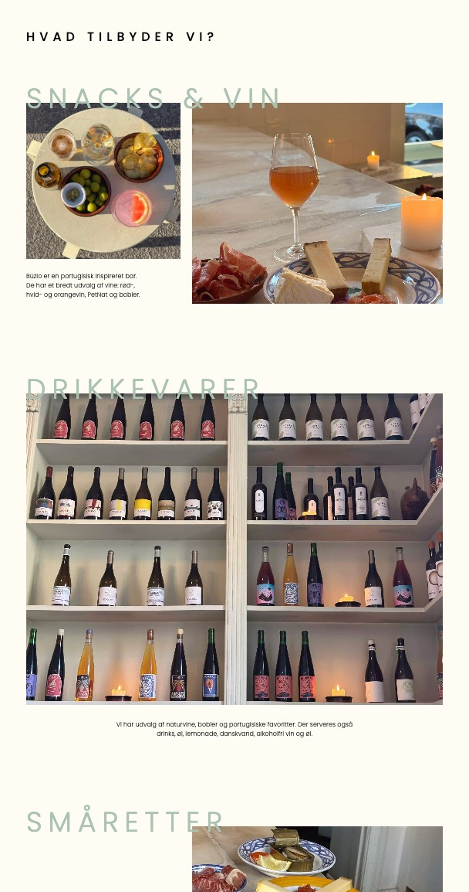
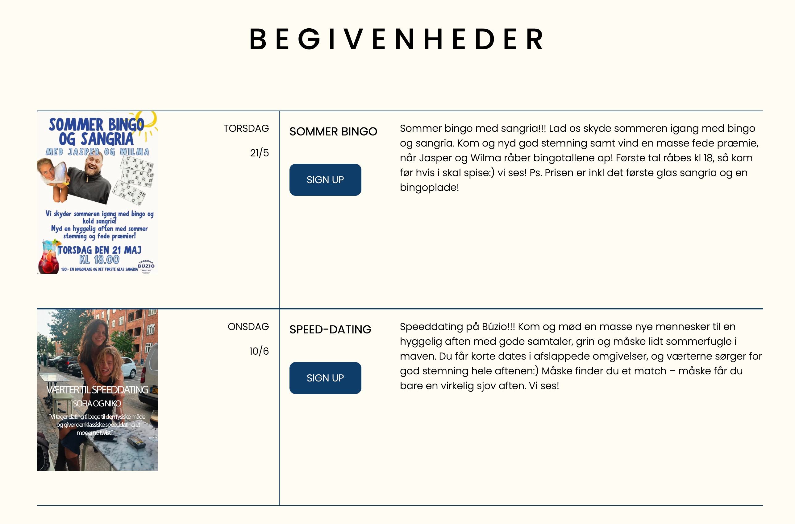
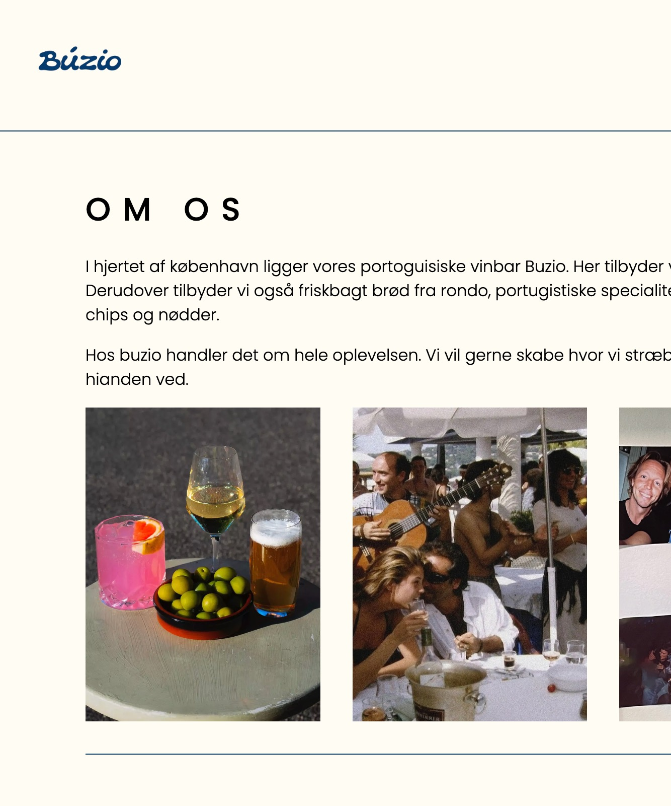